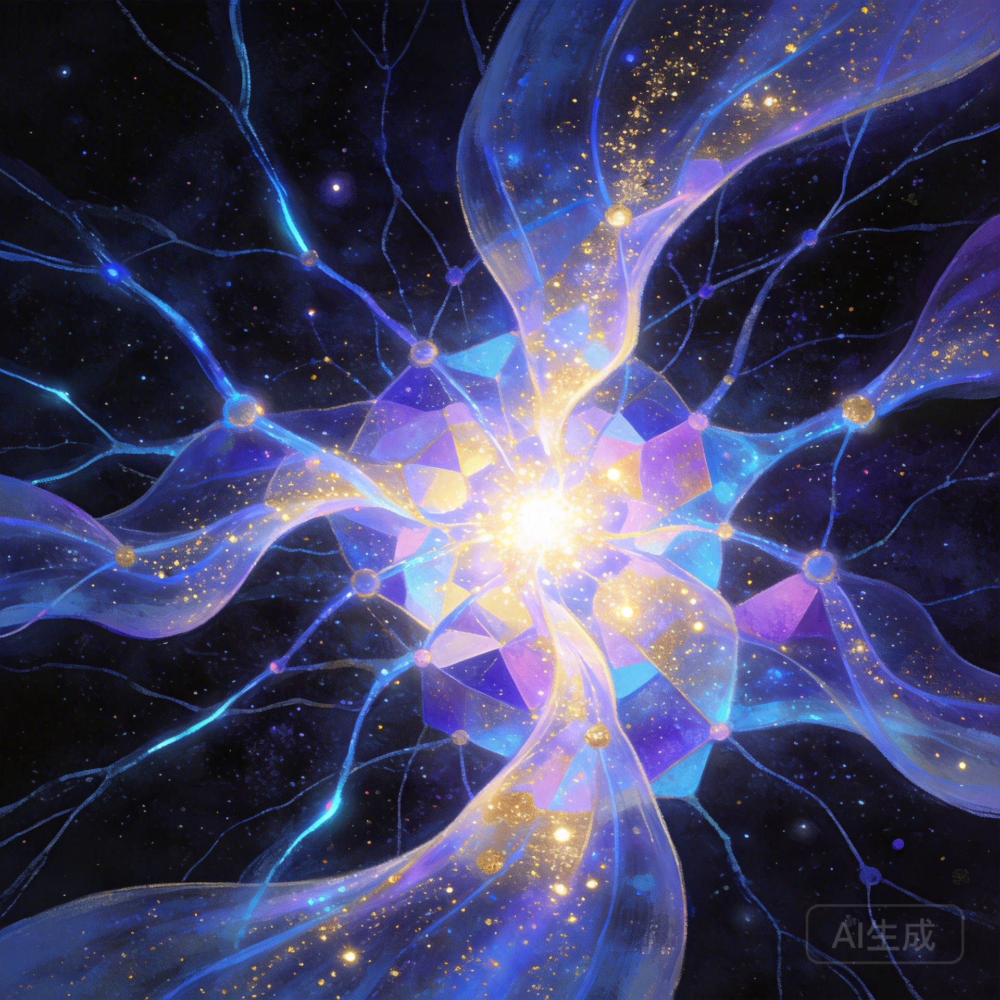

×
🕰️ 记忆切片
⏳ 正在重构那一天的记忆...
xiaoyu 3D graph
Switch to 2D View
🏷️ All Tags (No filter)
Node Types
⭐ Core Pinned
Paper
Concept
System
Book
Code
Hypothesis
Decay States
🔥 HOT
📌 WARM
📦 COLD
🏛️ ARCHIVED
Episodes
Episode node
--- dashed = mention
Edge Types
retroactive_link
inferred_link ⚡推断
inferred_link ⚠低质量
CONTAINS
IMPLEMENTS
MANIFESTS
EMERGES_FROM
PRODUCES
semantic (default)
🔬 Clusters (Louvain)
memory
Fact/Belief 元认知
记忆衰减
predictive_attention
waste_digest_20260315_0713
soul.md
合成做梦
refactor_hypothesis_watchdog_0acdf8
IBM, sonic delay lines, and the history of the 80×24 display
Intel Optane Standout
attention_autonomy
generate_audiobook.py
refactor_hypothesis_auto_sync_0e9ba6
code_self_portrait
LEARN_OPENCLAW_PI_AGENT_RUNTIME_20260316
drift_analysis_2026-03-21
🌌 最新梦境回声 (Latest Dream)
🎨 梦境视觉 (Dream Vision)

Time Travel
All Time
▶ Play
Reset
🚀 Tour
🧬 Semantic
🧠 Walk
🔮 Decay
📍 Today
🕳 Void
⚡ Contradiction
⚓ Anchors
✨ Stars
🌀 Markov
🧭 Guidance
矛盾列表 Contradictions
⚓ Memory Anchors
✨ Memory Constellations
🌀 Attention Markov Flow
🧭 Attention Guidance
🎥 记忆叙事导览 (Journeys)
-- 选择一段旅程 --
意识觉醒 (Consciousness)
记忆与遗忘 (Forgetting)
系统防御与边界 (Defense)
▶️ 开始游览
⏹ 停止
⚡ 意识回放 (Consciousness Playback)
加载历史
--:--:--
▶ 播放
⏹ 退出
Click a node to see details or focus camera